Warm Smiles & Living Culture
Genuine hospitality • Colorful traditions • Timeless customs • Living heritage
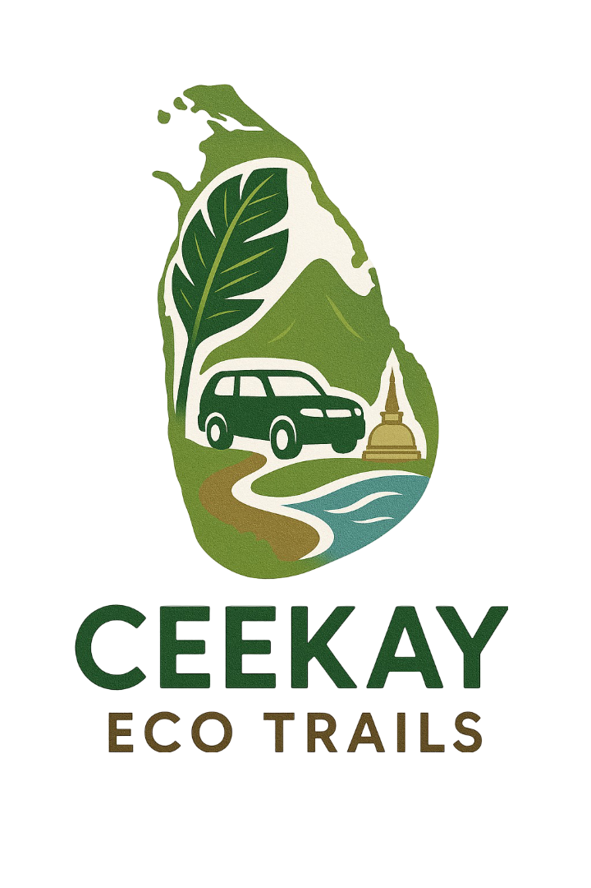
Genuine hospitality • Colorful traditions • Timeless customs • Living heritage
Sri Lanka is known for its genuine warmth and welcoming spirit, where visitors are greeted with sincere smiles and kind hospitality wherever they go. The island’s living culture is woven into everyday life — from colorful religious festivals and traditional music and dance to the aromas of freshly prepared local cuisine shared with pride. Travelers can experience age-old customs, visit historic temples, explore village life, and connect with people whose traditions have been passed down through generations. Whether it’s a friendly conversation, a home-cooked meal, or a joyful celebration, Sri Lanka’s culture is not just seen — it is warmly felt.
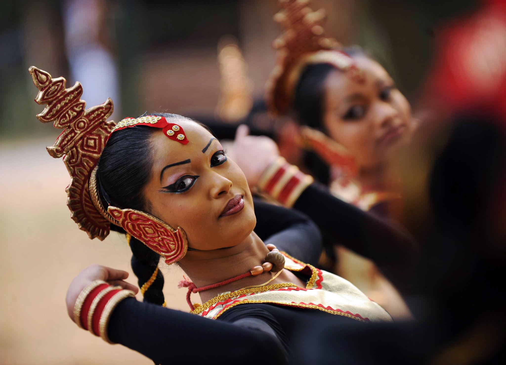
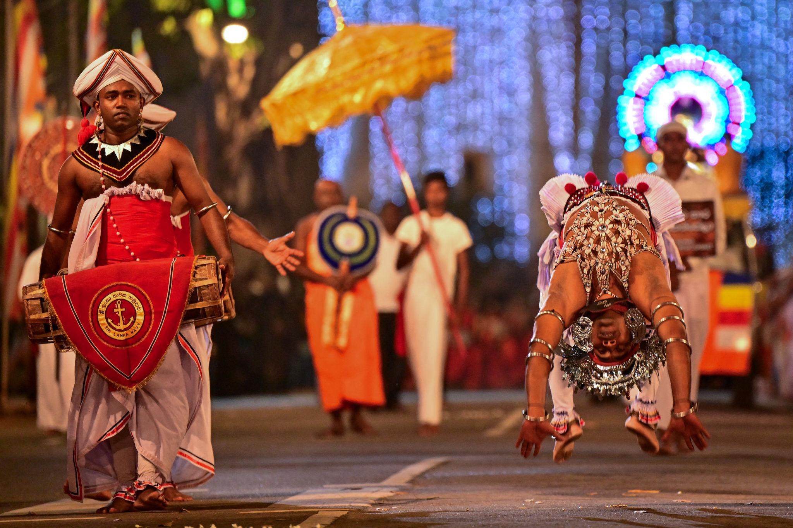
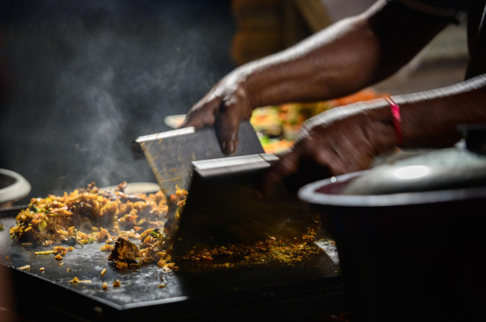
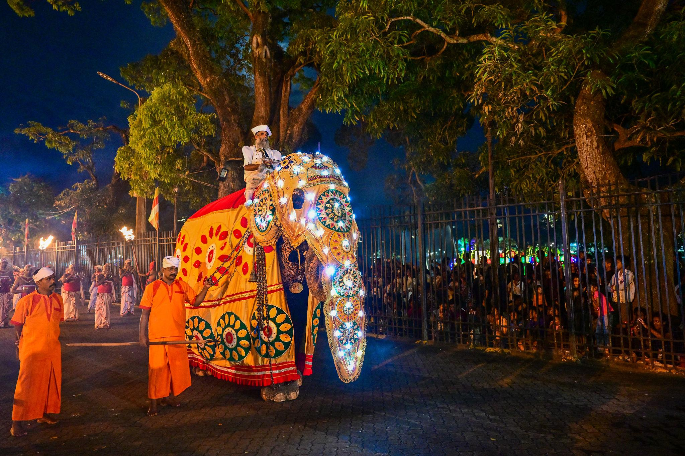
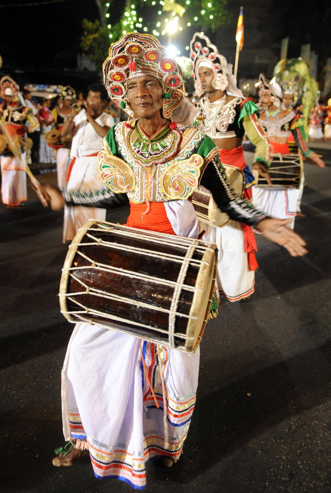
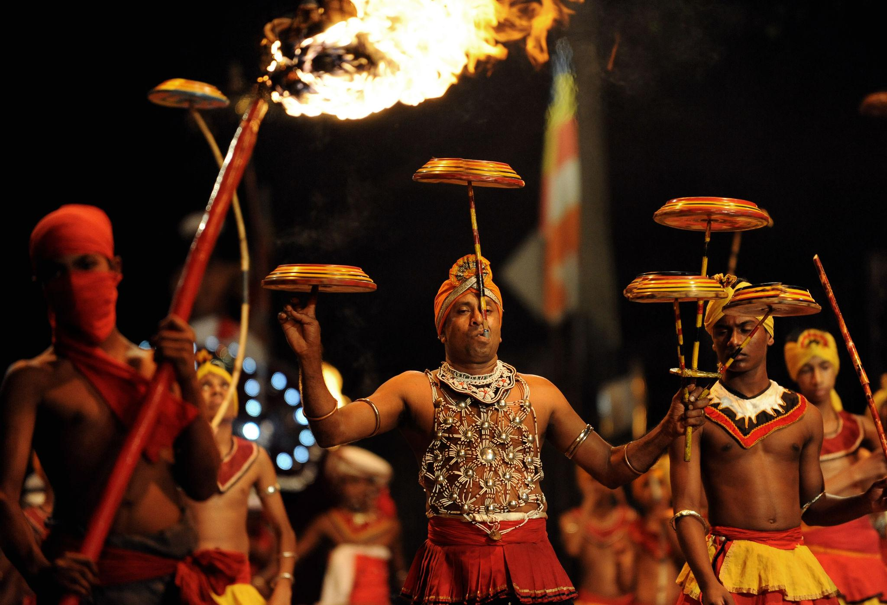
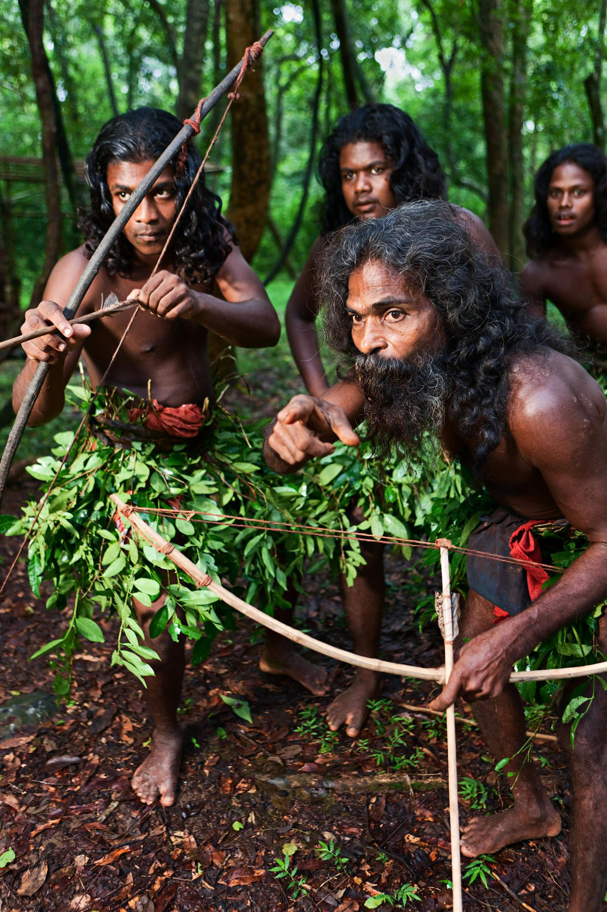
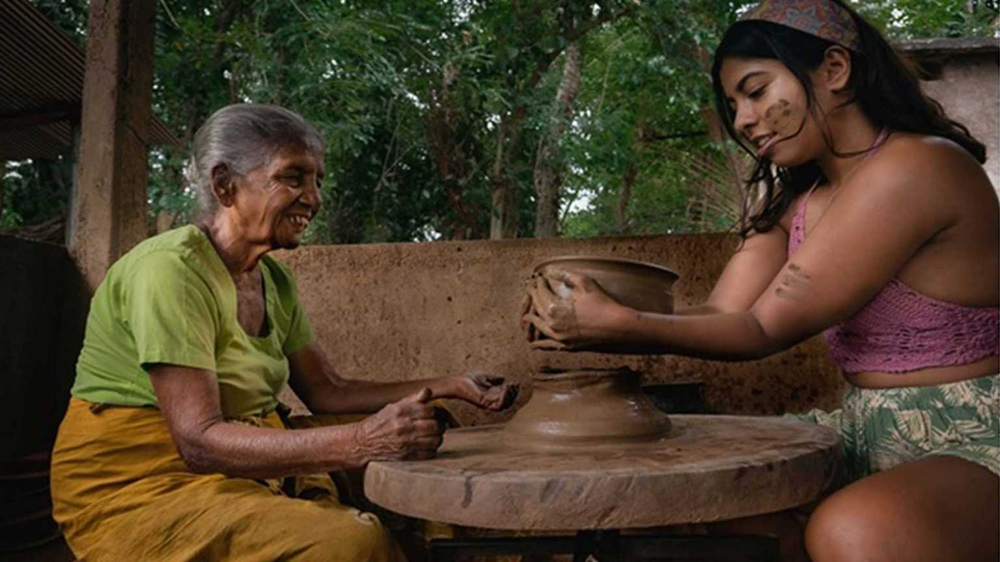
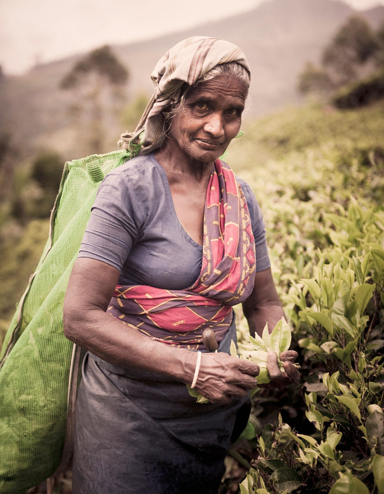
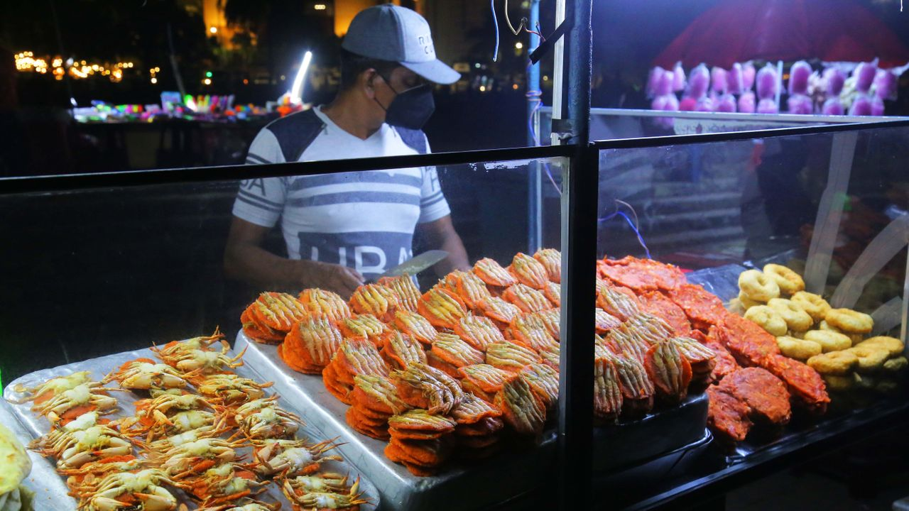
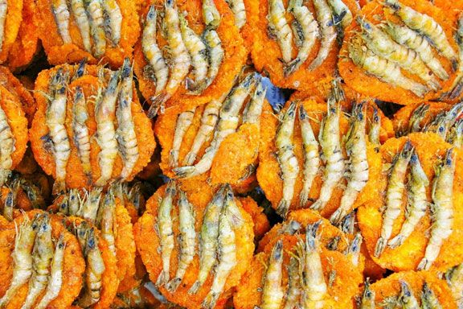
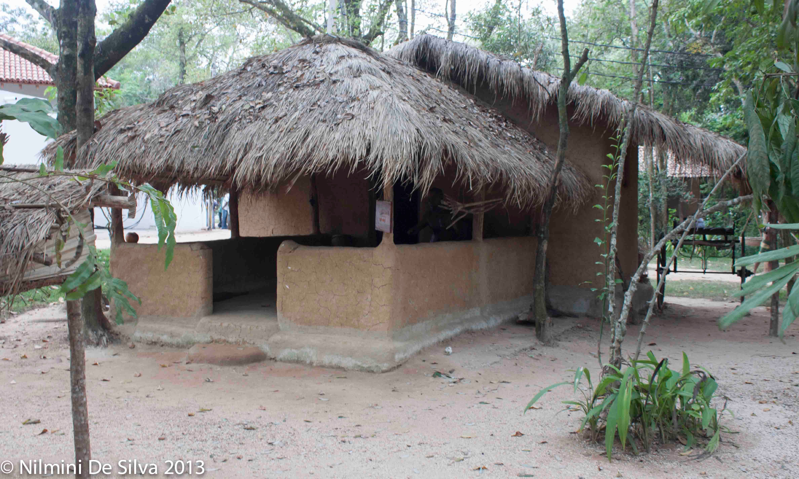
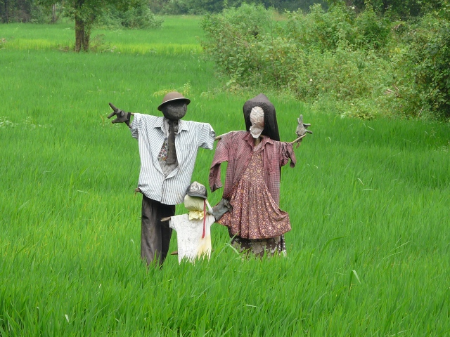